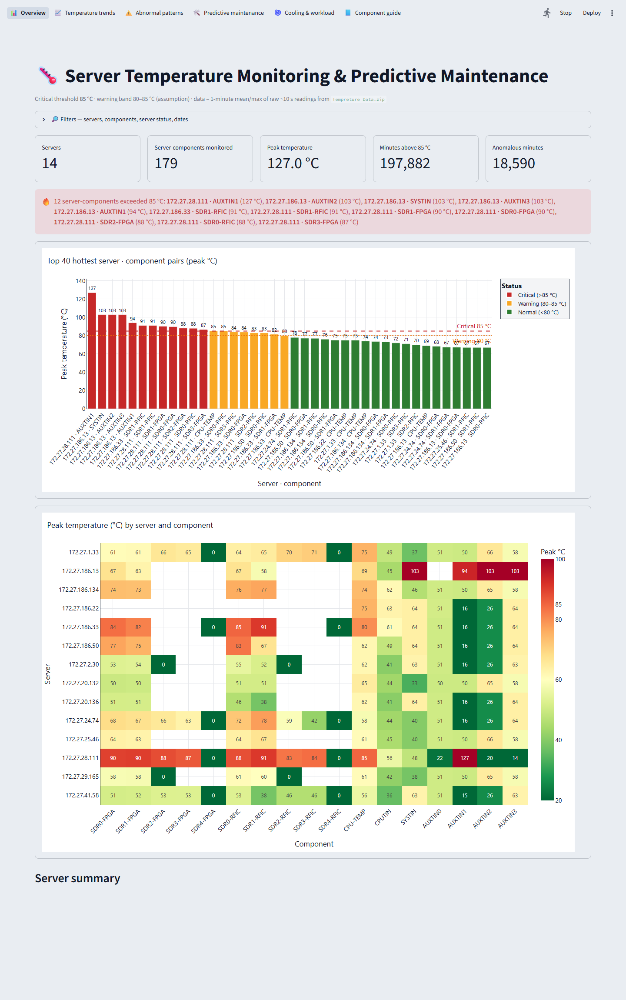
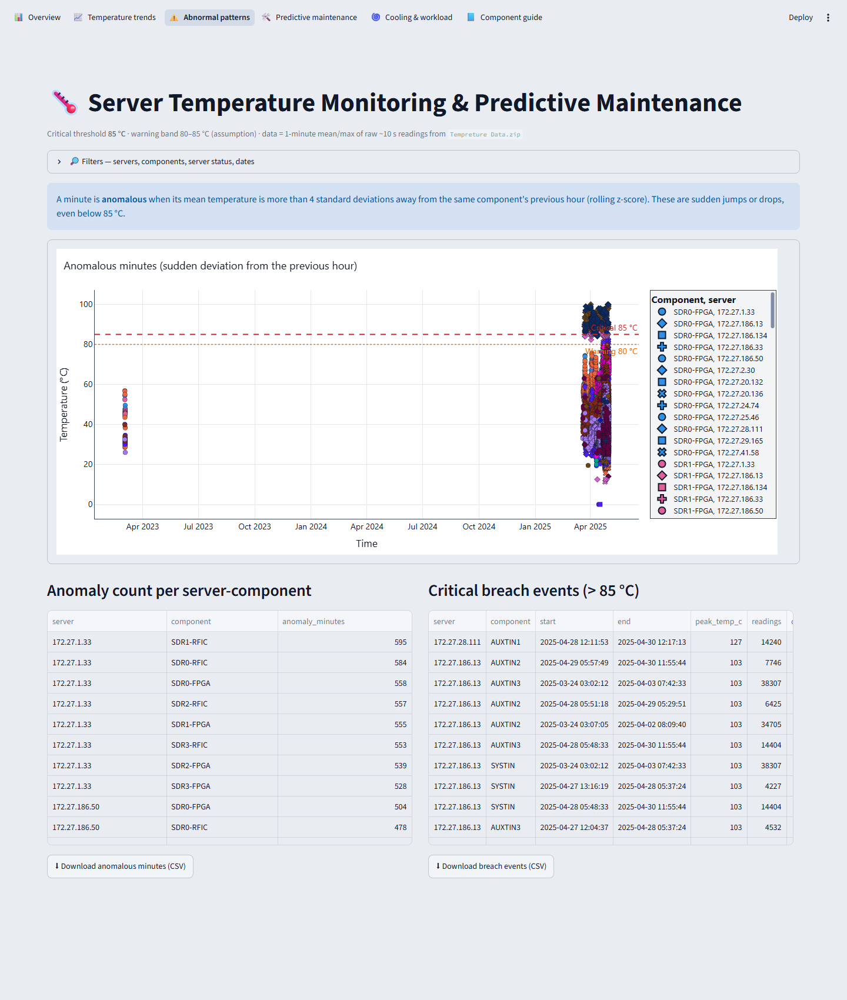
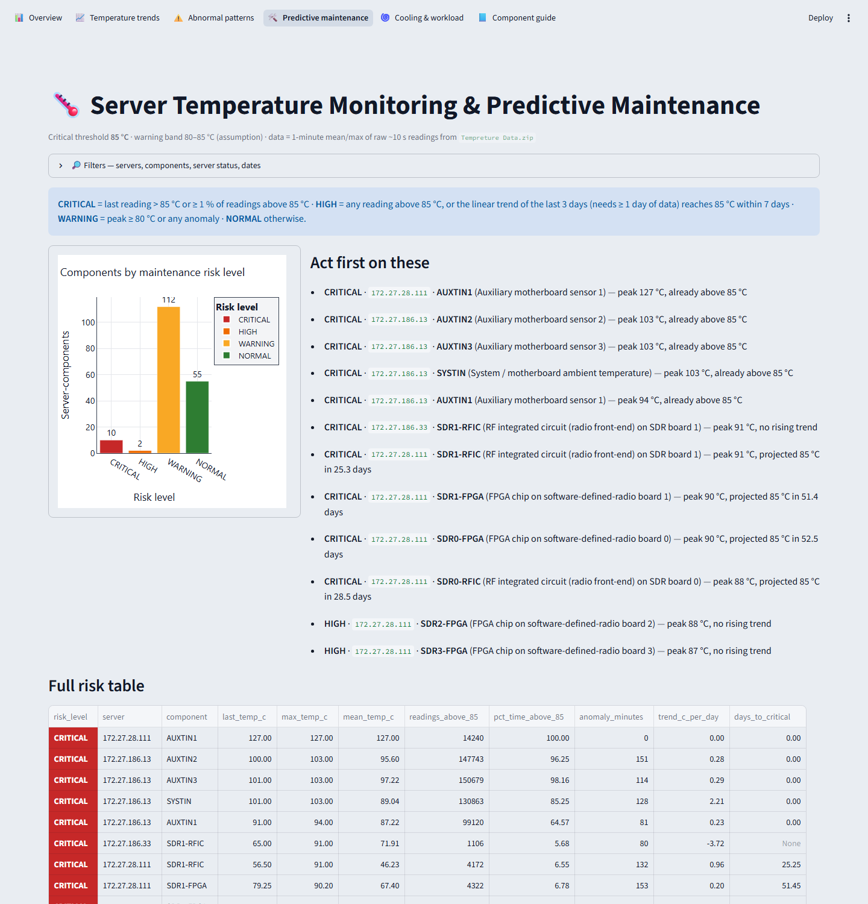

Final project report
| Name | Dharmapuri Srikrishna Ashrit |
| Registration number | 235890216 |
| Institution | Manipal Institute of Technology, Bengaluru |
| Date | 21 October 2026 |
The live dashboard is hosted on Streamlit Community Cloud (free tier). If the app has been idle, it may show a "wake up" button. Click it and wait about a minute for it to start.
I built an interactive web dashboard that reads the real temperature logs collected from 14 laboratory servers and checks every hardware component against the critical limit of 85 °C given in the problem statement. The dashboard answers four questions:
The whole analysis was run on the full dataset: 1,376,036 time-stamped readings, which contain 14,234,677 individual component temperatures. All numbers in this report come from that run. None are estimated or invented.
Problem (in plain words): The lab's servers log the temperature of each of their hardware components roughly every 10 seconds. If any component goes above 85 °C, it may be developing a hardware fault, and the server may go down. Looking through tens of thousands of raw log files by hand is not practical. The lab needs one place where it can see the temperatures visually, spot overheating parts, follow trends, notice unusual behaviour and plan maintenance before a failure happens.
Intended users: lab engineers, system administrators and maintenance staff who look after the servers.
Typical workflow:
Example: the raw log line 2025-04-27 00:00:13, active, SDR0-FPGA = 56 °C, … from server 172.27.186.134 appears on the trend chart as 56 °C for SDR0-FPGA, which is normal (below 80 °C). A reading of 87 °C would appear as a red ✕ above the dashed 85 °C line. It would be counted in "Minutes above 85 °C" and listed as a breach event, and the component would be rated High or Critical.
Every requirement below comes directly from the wording of the problem statement. None was dropped or weakened.
| # | Requirement (problem statement wording) | How it is met | Where to see it |
|---|---|---|---|
| 1 | Readings from multiple servers, each with multiple components | All 14 servers and all 17 temperature sensor types in the zip file are loaded automatically. Nothing is hard-coded. | Overview: Servers = 14, Server-components = 179 |
| 2 | Critical threshold of 85 °C for any component | The same 85 °C rule is applied to every component. "Exceeding" means strictly above 85 °C. Every temperature chart shows a red dashed 85 °C line. | All charts; critical_breach_events.csv |
| 3 | Interactive dashboard | A web dashboard with a top navigation bar and a filter bar (servers, components, active/idle status, date range). Charts can be zoomed and hovered for exact values, and legend entries can be clicked to hide or show lines. | Whole dashboard |
| 4 | Multiple graphical formats | Seven chart types: bar chart, heatmap, line chart (with time slider), box plot, grouped box plot, scatter plot, and a two-panel temperature-plus-fan chart. KPI cards and colour-coded tables add to these. | All pages |
| 5 | Identify overheating components | A red alert box names every server-component above 85 °C with its peak. The bar chart colours them red. A table lists every overheating event with start, end, duration and peak. | Overview; Abnormal patterns |
| 6 | Monitor temperature trends | A time-series line for each component of the chosen server. Minutes above 85 °C are marked, and a range slider allows zooming into any period. | Temperature trends |
| 7 | Detect abnormal patterns | An automatic statistical check flags any minute that differs sharply from the same component's previous hour (Section 7.2). | Abnormal patterns |
| 8 | Proactively address potential hardware failures (predictive maintenance) | A trend line is fitted to each component's recent data to project how many days remain until it reaches 85 °C. This is combined with past overheating and abnormal behaviour into four risk levels, with a "fix these first" list. | Predictive maintenance |
| Item | Details (checked by reading the files) |
|---|---|
| Source file | Tempreture Data.zip (47 MB compressed, 209 MB uncompressed), provided with the assignment |
| Structure | 30th_April/<server-IP>_info/heat-monitor-logs/heat-monitor_<date>.csv, one folder per server |
| Servers | 14 (IP addresses 172.27.x.x) |
| CSV files | 65,990 files: 131 contain readings, 65,857 contain only the header row, 2 are completely empty. Empty and header-only files are skipped. |
| Columns (same in every file) | Timestamp, STATUS (active/idle), 16 SDR board sensors (SDR0–7-FPGA, SDR0–7-RFIC), CPU-TEMP, CPUTIN, AUXTIN0–3, SYSTIN (all in °C), and FAN-1…7 (in rpm) |
| Missing sensors | Shown as "-" in the logs. They are treated as "sensor not present", not as zero. |
| Sampling | About one row every 10 seconds per server |
| Time span | Mostly 19 March 2025 to 30 April 2025. Server 172.27.186.50 also has 11,627 minutes dated 2–3 March 2023, most likely because that server's clock was wrong. These rows are kept and shown exactly as logged. |
| Size after loading | 1,376,036 rows → 14,234,677 valid component temperatures → 3,185,417 one-minute summaries |
| Other files | system_ip_info.txt and error_log.txt (hardware descriptions and setup errors). These are not temperature data, so they are not used. |
The 17 temperature sensors found in the data, and what they measure:
| Sensor | Meaning |
|---|---|
| SDR0-FPGA … SDR4-FPGA | FPGA chip on software-defined-radio (SDR) board 0–4 |
| SDR0-RFIC … SDR4-RFIC | RF integrated circuit (radio front-end chip) on SDR board 0–4 |
| CPU-TEMP | Processor (CPU) die temperature |
| CPUTIN | CPU socket temperature, read by the motherboard sensor chip |
| SYSTIN | System / motherboard temperature |
| AUXTIN0 … AUXTIN3 | Auxiliary motherboard sensors (e.g. voltage regulator or chipset area). Their exact location depends on the motherboard model, so this is an assumption. |
SDR5–SDR7 columns exist in the files but contain no readings ("-") on any server, so they do not appear in the results.
The project has two simple stages:
Tempreture Data.zip
│ (1) src/pipeline.py — read, clean, summarise, detect, score [run once, ~4 min]
▼
data/processed/*.parquet + results/tables/*.csv
│ (2) src/dashboard.py — interactive web dashboard (Streamlit)
▼
Browser: https://server-temp-monitor.streamlit.app/
Why two stages? Reading 65,990 files and 14 million temperatures takes about four minutes and over 3 GB of memory. That is too slow and too large to repeat every time someone opens the dashboard. So the heavy work is done once, and the dashboard opens the small, pre-processed result files (about 31 MB) in seconds.
| Criterion | Python + Streamlit + Plotly (chosen) | Python + Plotly Dash | Power BI / Grafana |
|---|---|---|---|
| Meets all requirements | Yes | Yes | Yes |
| Easy to understand and explain | High: plain Python, about 760 lines of application code | Medium: needs callback code for every interaction | Low: logic hidden in a GUI tool |
| Setup effort | One pip install command | Same | Separate installers; Grafana also needs a database |
| Cost / accounts | Free; free public hosting on Streamlit Community Cloud | Free; hosting needs your own server | Power BI sharing needs a paid licence; Grafana needs a server |
| Reproducible from source code | Yes, everything is in the GitHub repository | Yes | Partly (binary report files) |
| Component | Responsibility | Why it was chosen |
|---|---|---|
| Python 3.11 | Programming language for everything | Standard for data analysis; already installed |
| pandas | Reading CSVs, cleaning, one-minute summaries, statistics | The standard table-processing library |
| pyarrow (Parquet files) | Saves the processed data in a compact, fast format | 31 MB instead of hundreds of MB of CSV; loads in about 1 second |
| Plotly | All interactive charts (zoom, hover, legend toggle) | Interactive by default; the same chart code is used in the dashboard and for export |
| Streamlit | The web dashboard: navigation, filters, tables, downloads | A full web app in pure Python, with free one-click hosting |
| kaleido | Saves charts as PNG images for reports | Plotly's official image exporter |
| pytest | Automatic unit tests | The standard Python testing tool |
| GitHub + Streamlit Community Cloud | Code hosting and public deployment | Free, with no API keys or secrets needed |
Not used, on purpose: no database (files are enough for a fixed dataset), no machine-learning model (there are no records of actual hardware failures to train one honestly; see Section 7.3), and no paid services or API keys.
All steps are in src/pipeline.py. Each step is listed with the decision made and the reason for it.
| # | Step | Decision and reason |
|---|---|---|
| 1 | Read the CSVs directly from the zip | No manual extraction is needed, so the result is always produced from the original file. Files smaller than 500 bytes (header only) are skipped because they contain no readings. |
| 2 | Take the server name from the folder | 172_27_186_13_info becomes 172.27.186.13, so every reading is tied to the correct server. |
| 3 | Clean column names | SDR0-FPGA(°C) becomes SDR0-FPGA. The files use an older text encoding (Latin-1) for the degree sign, so they are read with that encoding to avoid errors. |
| 4 | Treat "-" as missing | A "-" means the sensor is not fitted. Counting it as 0 °C would be wrong. |
| 5 | Remove duplicate rows | The same server and timestamp appearing twice (overlapping log files) is kept once. |
| 6 | Remove impossible values | Values below −20 °C or above 150 °C are treated as sensor glitches and excluded. This does not affect the 85 °C analysis because the limits are far outside the real range. |
| 7 | Separate fans from temperatures | Fan columns are in rpm, not °C, so they are kept out of the temperature analysis and shown separately on the Cooling page. |
| 8 | Summarise to one row per minute, keeping both the average and the maximum | Fourteen million points are too many for a browser. Keeping the maximum as well as the average means a short spike above 85 °C can never be hidden by averaging. |
| 9 | Attach server status per minute | The last STATUS (active/idle) logged in each minute is attached, so temperatures under load can be compared with idle temperatures. |
| 10 | Run the analysis (Section 7) | Overheating events, abnormal minutes, trend, risk level. |
| 11 | Save outputs | Processed data goes to data/processed/, result tables to results/tables/ and the run log to results/pipeline_log.txt. |
ANOMALY_Z) and can be changed.The rules are checked in this order, and each component gets the first level that applies:
| Level | Rule | Meaning for maintenance |
|---|---|---|
| CRITICAL | Latest temperature is above 85 °C, or at least 1% of all its readings were above 85 °C | Act now: overheating is ongoing or repeated |
| HIGH | At least one reading above 85 °C, or the trend reaches 85 °C within 7 days | Plan an inspection soon |
| WARNING | Peak of 80 °C or more, or at least one abnormal minute | Keep watching |
| NORMAL | None of the above | No action needed |
Layout: a navigation bar at the top switches between six pages. Under the title, a filter bar (click to open) applies to every page: servers, components, server status (active/idle) and date range. Every chart sits on a white card with dark text and grid lines for high contrast. Legends sit in a grey box with a bold title. Each component keeps the same colour on every chart, and all charts are labelled with component names. The 85 °C line (red dashed) and 80 °C line (orange dotted) are drawn on every temperature chart.
Interaction on every chart: hover to see exact values, drag to zoom, double-click to reset, click a legend entry to hide or show it, and double-click a legend entry to show only that one.



A reference table explaining what every sensor measures, the colour it uses on every chart, and whether it appears in this dataset.
All figures below come from the full run recorded in results/pipeline_log.txt and the tables in results/tables/.
| Measure | Result |
|---|---|
| Servers analysed | 14 |
| Server-component combinations monitored | 179 |
| Servers with at least one reading above 85 °C | 3 of 14: 172.27.28.111, 172.27.186.13, 172.27.186.33 |
| Server-components that exceeded 85 °C | 12 |
| Overheating events (consecutive readings above 85 °C) | 237 |
| Minutes with a reading above 85 °C | 197,882 |
| Abnormal minutes detected | 18,590 |
| Highest temperature recorded | 127 °C (172.27.28.111, AUXTIN1; see the data-quality note in 9.3) |
| Risk levels (179 server-components) | Critical 10 · High 2 · Warning 112 · Normal 55 (total 179) |
| Level | Server | Component | Latest °C | Peak °C | Readings > 85 °C | % time > 85 °C | Abnormal min | Trend °C/day | Days to 85 °C |
|---|---|---|---|---|---|---|---|---|---|
| CRITICAL | 172.27.28.111 | AUXTIN1 Auxiliary motherboard sensor 1 | 127.0 | 127.0 | 14,240 | 100.0 | 0 | +0.00 | 0.0 |
| CRITICAL | 172.27.186.13 | AUXTIN2 Auxiliary motherboard sensor 2 | 100.0 | 103.0 | 147,743 | 96.3 | 151 | +0.28 | 0.0 |
| CRITICAL | 172.27.186.13 | AUXTIN3 Auxiliary motherboard sensor 3 | 101.0 | 103.0 | 150,679 | 98.2 | 114 | +0.29 | 0.0 |
| CRITICAL | 172.27.186.13 | SYSTIN System / motherboard ambient temperature | 101.0 | 103.0 | 130,863 | 85.3 | 128 | +2.21 | 0.0 |
| CRITICAL | 172.27.186.13 | AUXTIN1 Auxiliary motherboard sensor 1 | 91.0 | 94.0 | 99,120 | 64.6 | 81 | +0.23 | 0.0 |
| CRITICAL | 172.27.186.33 | SDR1-RFIC RF integrated circuit (radio front-end) on SDR board 1 | 65.0 | 91.0 | 1,106 | 5.7 | 80 | -3.72 | – |
| CRITICAL | 172.27.28.111 | SDR1-RFIC RF integrated circuit (radio front-end) on SDR board 1 | 56.5 | 91.0 | 4,172 | 6.5 | 132 | +0.96 | 25.3 |
| CRITICAL | 172.27.28.111 | SDR1-FPGA FPGA chip on software-defined-radio board 1 | 79.2 | 90.2 | 4,322 | 6.8 | 153 | +0.20 | 51.4 |
| CRITICAL | 172.27.28.111 | SDR0-FPGA FPGA chip on software-defined-radio board 0 | 78.9 | 89.8 | 4,336 | 6.8 | 153 | +0.20 | 52.5 |
| CRITICAL | 172.27.28.111 | SDR0-RFIC RF integrated circuit (radio front-end) on SDR board 0 | 57.0 | 88.0 | 2,686 | 4.2 | 131 | +0.86 | 28.5 |
| HIGH | 172.27.28.111 | SDR2-FPGA FPGA chip on software-defined-radio board 2 | 73.3 | 88.2 | 7 | 0.0 | 114 | -0.28 | – |
| HIGH | 172.27.28.111 | SDR3-FPGA FPGA chip on software-defined-radio board 3 | 72.6 | 86.7 | 5 | 0.0 | 118 | -0.25 | – |
“Days to 85 °C” = 0 means the component is already above 85 °C. “–” means no rise towards 85 °C is projected (flat or cooling trend). “Latest °C” is the average of the component's last 30 one-minute values.
| Check | Result |
|---|---|
Automatic unit tests (python -m pytest -q) | 17 passed, 1 warning in 1.24s (all tests passed) |
| What the tests cover | Server name and column name parsing; header-only files are skipped; "-" is treated as missing; the 85 °C rule is strictly "greater than"; consecutive readings are grouped into one event; the one-minute maximum keeps short spikes; fan and status extraction; the trend slope and days-to-85 °C calculation; no trend projection from less than one day of data; all four risk rules; a sudden jump is flagged as an anomaly; the box-plot numbers match the textbook definition; averaging into larger time blocks never loses the maximum. The tests use a small, hand-written sample file whose correct answers are known in advance. It is labelled as test data in the code. |
| Full pipeline on the real data | Completed. Log saved in results/pipeline_log.txt |
| Chart export | 34 interactive HTML charts and 34 PNG images in results/charts/ |
| Dashboard, all 6 pages, opened in a browser | No errors; the screenshots in Section 8 are from this check |
| Dashboard memory use (local measurement) | About 320 MB after opening every page, which is within Streamlit Community Cloud's documented range of 690 MB–2.7 GB |
| Consistency check | The dashboard KPI values (14 servers, 179 server-components, 127 °C peak, 197,882 minutes above 85 °C, 18,590 abnormal minutes) match the pipeline output exactly |
Requirements: Python 3.11 and Windows, macOS or Linux. PNG export also needs Google Chrome or Microsoft Edge installed. Run these from the project folder:
git clone https://github.com/KRISHNA2107DK/Server-Temperature-Monitoring-and-Predictive-Maintenance-Dashboard.git cd Server-Temperature-Monitoring-and-Predictive-Maintenance-Dashboard pip install -r requirements.txt python src/pipeline.py # ~4 minutes: rebuilds data/processed and results/tables python src/export_charts.py # rebuilds results/charts (HTML + PNG) python -m pytest -q # runs the unit tests streamlit run src/dashboard.py # opens the dashboard at http://localhost:8501
The pipeline is deterministic: running it again on the same zip file gives exactly the same tables. Library versions used: Python 3.11.9, pandas 3.0.2, plotly 7.1.0, streamlit 1.66.0, pyarrow 26.0.0, kaleido 1.5.0, pytest 9.1.1.
| Path (in the GitHub repository) | Contents |
|---|---|
src/pipeline.py | Data loading, cleaning, one-minute summaries, overheating events, anomaly detection, trend, risk levels |
src/charts.py | All chart designs (one place, so the dashboard and exported images look the same) |
src/dashboard.py | The Streamlit dashboard (navigation, filters, six pages, downloads) |
src/export_charts.py | Saves every chart as HTML and PNG |
tests/test_pipeline.py | Unit tests |
results/tables/ | server_summary.csv, component_risk_summary.csv, critical_breach_events.csv, anomalies.csv |
results/charts/ and results/charts/png/ | 34 interactive HTML charts and 34 PNG images (overview charts, plus a trend chart and a cooling chart for each server) |
results/*.txt | Logs of the pipeline run, chart export and test run |
data/processed/ | Pre-processed data used by the live dashboard |
SPEC.md, PLAN.md, README.md | Requirements and acceptance criteria, implementation plan, setup instructions |
submission/ | This report (PDF and HTML) and the dashboard screenshots |
The project meets every requirement of the problem statement. It is an interactive, publicly hosted dashboard that applies the 85 °C critical threshold to every component of all 14 servers. It presents the data in seven chart types, identifies overheating components and events, shows temperature trends, detects abnormal patterns automatically, and ranks components by maintenance risk using a transparent trend projection.
On the real data it found that 3 of the 14 servers exceeded the critical limit. The most urgent case is 172.27.186.13: motherboard sensors at up to 103 °C for most of the logged period, with no fan speed reported. It also found 172.27.28.111's hot SDR radio boards, and a likely faulty sensor reading a constant 127 °C. Every method, assumption and limitation is stated openly in this report, and every result can be reproduced from the public GitHub repository with the commands in Section 12.